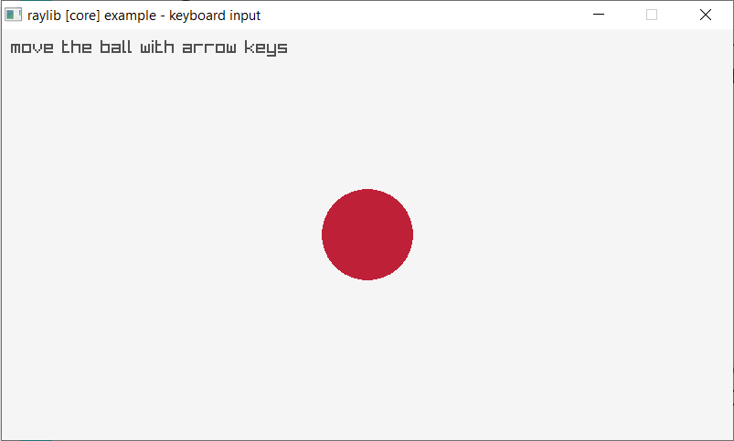
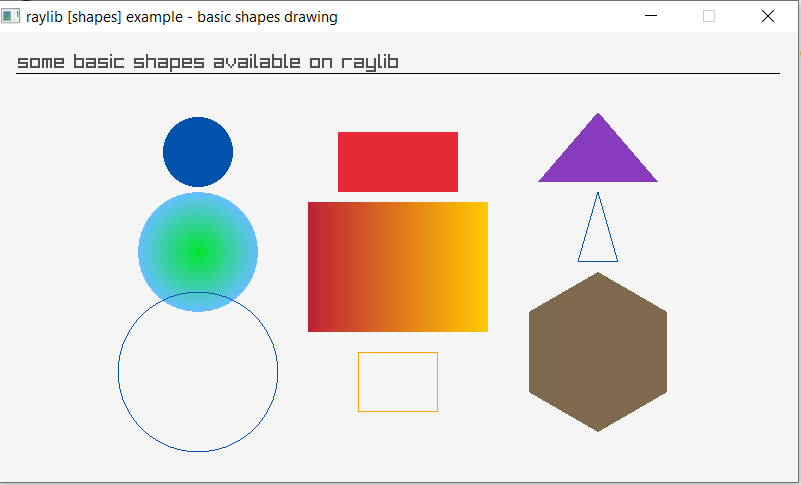
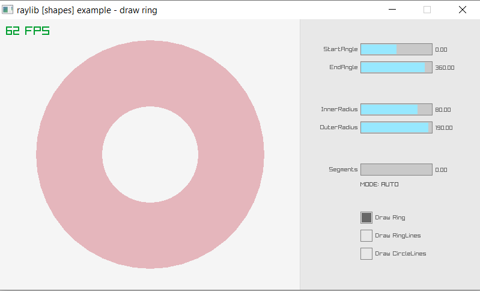
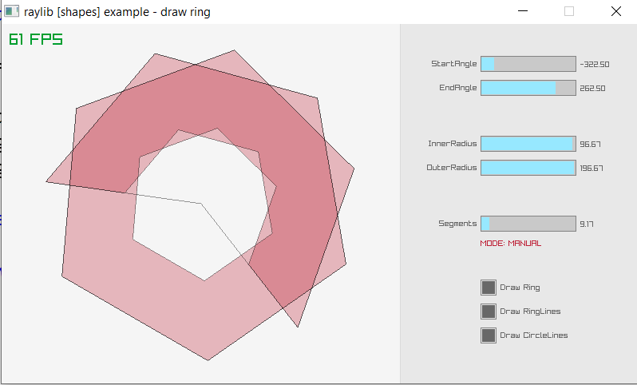
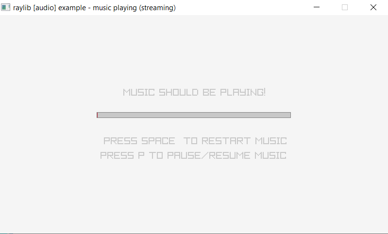
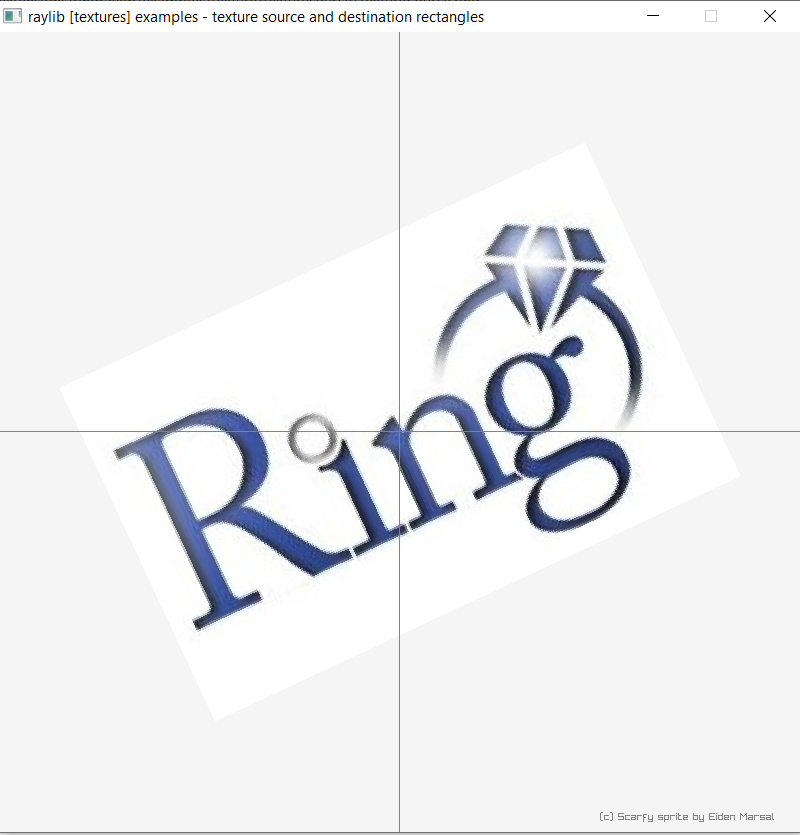

Developing Games using RingRayLib¶
In this chapter we will learn how to use the RingRayLib extension.
Introduction¶
RingRayLib is an extension for the RayLib game programming library.
Also RayGUI functions are supported by this extension.
Basic Window¶
load "raylib.ring"
screenWidth = 800
screenHeight = 450
InitWindow(screenWidth, screenHeight, "raylib [core] example - basic window")
SetTargetFPS(60)
while !WindowShouldClose()
BeginDrawing()
ClearBackground(RED)
DrawText("Congrats! You created your first window!", 190, 200, 20, WHITE)
EndDrawing()
end
CloseWindow()
Screen Shot:

Input Keys¶
load "raylib.ring"
screenWidth = 800
screenHeight = 450
InitWindow(screenWidth, screenHeight, "raylib [core] example - keyboard input")
ballPosition = Vector2(screenWidth/2, screenHeight/2)
SetTargetFPS(60)
while !WindowShouldClose()
if IsKeyDown(KEY_RIGHT) ballPosition.x += 2 ok
if IsKeyDown(KEY_LEFT) ballPosition.x -= 2 ok
if IsKeyDown(KEY_UP) ballPosition.y -= 2 ok
if IsKeyDown(KEY_DOWN) ballPosition.y += 2 ok
BeginDrawing()
ClearBackground(RAYWHITE)
DrawText("move the ball with arrow keys", 10, 10, 20, DARKGRAY)
DrawCircleV(ballPosition, 50, MAROON)
EndDrawing()
end
CloseWindow()
Screen Shot:
Input Mouse¶
load "raylib.ring"
screenWidth = 800
screenHeight = 450
InitWindow(screenWidth, screenHeight, "raylib [core] example - mouse input")
ballPosition = Vector2(100, 100)
ballColor = DARKBLUE
SetTargetFPS(60)
while ! WindowShouldClose()
ballPosition = GetMousePosition()
if IsMouseButtonPressed(MOUSE_LEFT_BUTTON)
ballColor = MAROON
but IsMouseButtonPressed(MOUSE_MIDDLE_BUTTON)
ballColor = LIME
but IsMouseButtonPressed(MOUSE_RIGHT_BUTTON)
ballColor = DARKBLUE
ok
BeginDrawing()
ClearBackground(BLACK)
DrawCircleV(ballPosition, 40, ballColor)
DrawText("move ball with mouse and click mouse button to change color",
10, 10, 20, YELLOW)
EndDrawing()
end
CloseWindow()
Screen Shot:

3D Camera¶
load "raylib.ring"
screenWidth = 800
screenHeight = 450
InitWindow(screenWidth, screenHeight, "raylib [core] example - 3d camera mode")
camera = Camera3D(
0, 10, 10, // Camera position
0, 0, 0 , // Camera looking at point
0, 1, 0, // Camera up vector (rotation towards target)
45, // Camera field-of-view Y
CAMERA_PERSPECTIVE) // Camera mode type
cubePosition = Vector3(0, 0, 0)
SetTargetFPS(60)
while !WindowShouldClose()
BeginDrawing()
ClearBackground(RAYWHITE)
BeginMode3D(camera)
DrawCube(cubePosition, 2, 2, 2, RED)
DrawCubeWires(cubePosition, 2, 2, 2, MAROON)
DrawGrid(10, 1)
EndMode3D()
DrawText("Welcome to the third dimension!", 10, 40, 20, DARKGRAY)
DrawFPS(10, 10)
EndDrawing()
end
CloseWindow()
Screen Shot:

3D Camera Free¶
load "raylib.ring"
screenWidth = 800
screenHeight = 450
InitWindow(screenWidth, screenHeight, "raylib [core] example - 3d camera free")
camera = Camera3D(
10, 10, 10, // Camera position
0, 0, 0 , // Camera looking at point
0, 1, 0, // Camera up vector (rotation towards target)
45, // Camera field-of-view Y
CAMERA_PERSPECTIVE) // Camera mode type
cubePosition = Vector3(0, 0, 0)
SetCameraMode(camera, CAMERA_FREE) // Set a free camera mode
SetTargetFPS(60)
while !WindowShouldClose()
UpdateCamera(camera)
if IsKeyDown("Z") camera.target = Vector3( 0, 0, 0) ok
BeginDrawing()
ClearBackground(RAYWHITE)
BeginMode3D(camera)
DrawCube(cubePosition, 2, 2, 2, RED)
DrawCubeWires(cubePosition, 2, 2, 2, MAROON)
DrawGrid(10, 1)
EndMode3D()
DrawRectangle( 10, 10, 320, 133, Fade(SKYBLUE, 0.5))
DrawRectangleLines( 10, 10, 320, 133, BLUE)
DrawText("Free camera default controls:", 20, 20, 10, BLACK)
DrawText("- Mouse Wheel to Zoom in-out", 40, 40, 10, DARKGRAY)
DrawText("- Mouse Wheel Pressed to Pan", 40, 60, 10, DARKGRAY)
DrawText("- Alt + Mouse Wheel Pressed to Rotate", 40, 80, 10, DARKGRAY)
DrawText("- Alt + Ctrl + Mouse Wheel Pressed for Smooth Zoom",
40, 100, 10, DARKGRAY)
DrawText("- Z to zoom to (0, 0, 0)", 40, 120, 10, DARKGRAY)
EndDrawing()
end
CloseWindow()
Screen Shot:

Mouse Wheel¶
load "raylib.ring"
screenWidth = 800
screenHeight = 450
InitWindow(screenWidth, screenHeight, "raylib [core] example - input mouse wheel")
boxPositionY = screenHeight/2 - 40
scrollSpeed = 4
SetTargetFPS(60)
while !WindowShouldClose()
boxPositionY -= (GetMouseWheelMove()*scrollSpeed)
BeginDrawing()
ClearBackground(RAYWHITE)
DrawRectangle(screenWidth/2 - 40, boxPositionY, 80, 80, MAROON)
DrawText("Use mouse wheel to move the cube up and down!", 10, 10, 20, GRAY)
DrawText("Box position Y: "+boxPositionY, 10, 40, 20, LIGHTGRAY)
EndDrawing()
end
CloseWindow()
Screen Shot:

Input Multi-touch¶
load "raylib.ring"
screenWidth = 800
screenHeight = 450
InitWindow(screenWidth, screenHeight, "raylib [core] example - input multitouch")
ballPosition = Vector2(-100, -100)
ballColor = BEIGE
touchCounter = 0
touchPosition = vector2(0,0)
MAX_TOUCH_POINTS = 5
SetTargetFPS(60)
while !WindowShouldClose()
ballPosition = GetMousePosition()
ballColor = BEIGE
if IsMouseButtonDown(MOUSE_LEFT_BUTTON) ballColor = MAROON ok
if IsMouseButtonDown(MOUSE_MIDDLE_BUTTON) ballColor = LIME ok
if IsMouseButtonDown(MOUSE_RIGHT_BUTTON) ballColor = DARKBLUE ok
if IsMouseButtonPressed(MOUSE_LEFT_BUTTON) touchCounter = 10 ok
if IsMouseButtonPressed(MOUSE_MIDDLE_BUTTON) touchCounter = 10 ok
if IsMouseButtonPressed(MOUSE_RIGHT_BUTTON) touchCounter = 10 ok
if touchCounter > 0 touchCounter-- ok
BeginDrawing()
ClearBackground(RAYWHITE)
for i = 0 to MAX_TOUCH_POINTS-1
touchPosition = GetTouchPosition(i)
if touchPosition.x >= 0 && touchPosition.y >= 0
DrawCircleV(touchPosition, 34, ORANGE)
DrawText(""+ i, touchPosition.x - 10,
touchPosition.y - 70, 40, BLACK)
ok
next
DrawCircleV(ballPosition, 30 + (touchCounter*3), ballColor)
DrawText("move ball with mouse and click mouse button to change color",
10, 10, 20, DARKGRAY)
DrawText("touch the screen at multiple locations to get multiple balls",
10, 30, 20, DARKGRAY)
EndDrawing()
end
CloseWindow()
Screen Shot:

Camera First Person¶
load "raylib.ring"
MAX_COLUMNS = 20
screenWidth = 800
screenHeight = 450
InitWindow(screenWidth, screenHeight, "raylib [core] example - 3d camera first person")
camera = Camera3d(
4, 2, 4,
0, 1, 0,
0, 1, 0,
60,
CAMERA_PERSPECTIVE
)
heights = list(MAX_COLUMNS)
positions = list(MAX_COLUMNS)
for item in positions item = vector3(0,0,0) next
colors = list(MAX_COLUMNS)
for item in colors item = BLACK next
for i = 1 to MAX_COLUMNS
heights[i] = GetRandomValue(1, 12)
positions[i] = Vector3(GetRandomValue(-15, 15),
heights[i]/2, GetRandomValue(-15, 15) )
colors[i] = RAYLibColor(GetRandomValue(20, 255),
GetRandomValue(10, 55), 30, 255 )
next
SetCameraMode(camera, CAMERA_FIRST_PERSON)
SetTargetFPS(60)
while !WindowShouldClose()
UpdateCamera(camera)
BeginDrawing()
ClearBackground(RAYWHITE)
BeginMode3D(camera)
DrawPlane(Vector3( 0, 0, 0 ), Vector2(32, 32 ), LIGHTGRAY) // Draw ground
DrawCube(Vector3( -16, 2.5, 0 ), 1, 5, 32, BLUE) // Draw a blue wall
DrawCube(Vector3( 16, 2.5, 0 ), 1, 5, 32, LIME) // Draw a green wall
DrawCube(Vector3( 0, 2.5, 16 ), 32, 5, 1, GOLD) // Draw a yellow wall
for i = 1 to MAX_COLUMNS
DrawCube(positions[i], 2, heights[i], 2, colors[i])
DrawCubeWires(positions[i], 2, heights[i], 2, MAROON)
next
EndMode3D()
DrawRectangle( 10, 10, 220, 70, Fade(SKYBLUE, 0.5f))
DrawRectangleLines( 10, 10, 220, 70, BLUE)
DrawText("First person camera default controls:", 20, 20, 10, BLACK)
DrawText("- Move with keys: W, A, S, D", 40, 40, 10, DARKGRAY)
DrawText("- Mouse move to look around", 40, 60, 10, DARKGRAY)
EndDrawing()
end
CloseWindow()
Screen Shot:

3D Picking¶
load "raylib.ring"
screenWidth = 800
screenHeight = 450
InitWindow(screenWidth, screenHeight, "raylib [core] example - 3d picking")
camera = Camera3D(
10, 10, 10,
0, 0, 0 ,
0, 1, 0 ,
45,
CAMERA_PERSPECTIVE
)
cubePosition = Vector3( 0, 1, 0 )
cubeSize = Vector3( 2, 2, 2 )
ray = Ray(0,0,0,0,0,0)
collision = false
SetCameraMode(camera, CAMERA_FREE)
SetTargetFPS(60)
while !WindowShouldClose()
UpdateCamera(camera)
if IsMouseButtonPressed(MOUSE_LEFT_BUTTON)
if !collision
ray = GetMouseRay(GetMousePosition(), camera)
collision = CheckCollisionRayBox(ray,
BoundingBox( cubePosition.x - cubeSize.x/2,
cubePosition.y - cubeSize.y/2, cubePosition.z - cubeSize.z/2,
cubePosition.x + cubeSize.x/2, cubePosition.y + cubeSize.y/2,
cubePosition.z + cubeSize.z/2 ) )
else collision = false
ok
ok
BeginDrawing()
ClearBackground(RAYWHITE)
BeginMode3D(camera)
if collision
DrawCube(cubePosition, cubeSize.x, cubeSize.y, cubeSize.z, RED)
DrawCubeWires(cubePosition, cubeSize.x, cubeSize.y, cubeSize.z, MAROON)
DrawCubeWires(cubePosition, cubeSize.x + 0.2f,
cubeSize.y + 0.2f, cubeSize.z + 0.2f, GREEN)
else
DrawCube(cubePosition, cubeSize.x, cubeSize.y, cubeSize.z, GRAY)
DrawCubeWires(cubePosition, cubeSize.x, cubeSize.y, cubeSize.z, DARKGRAY)
ok
DrawRay(ray, MAROON)
DrawGrid(10, 1)
EndMode3D()
DrawText("Try selecting the box with mouse!", 240, 10, 20, DARKGRAY)
if collision DrawText("BOX SELECTED",
(screenWidth - MeasureText("BOX SELECTED", 30)) / 2,
screenHeight * 0.1f, 30, GREEN) ok
DrawFPS(10, 10)
EndDrawing()
end
CloseWindow()
Screen Shot:

Full Screen¶
load "raylib.ring"
screenWidth = 1024
screenHeight = 768
InitWindow(screenWidth, screenHeight, "Full Screen")
ToggleFullScreen()
SetTargetFPS(60)
while !WindowShouldClose()
BeginDrawing()
ClearBackground(DARKBLUE)
DrawText("Count from 1 to 10", 190, 200, 20, Yellow)
for t = 1 to 10
DrawText("Number: " + t, 190, 200+(30*t), 20, WHITE)
next
EndDrawing()
end
CloseWindow()
Screen Shot:

Two Cubes¶
load "raylib.ring"
screenWidth = 800
screenHeight = 450
InitWindow(screenWidth, screenHeight, "raylib [core] example - Two Cubes")
camera = Camera3D(
10, 10, 10,
0, 0, 0 ,
0, 1, 0 ,
45,
CAMERA_PERSPECTIVE
)
cubePosition1 = Vector3( 0, 1, 4 )
cubePosition2 = Vector3( 0, 1, -4 )
cubeSize = Vector3( 2, 2, 2 )
ray = Ray(0,0,0,0,0,0)
collision1 = false
collision2 = false
SetCameraMode(camera, CAMERA_FREE)
SetTargetFPS(60)
while !WindowShouldClose()
UpdateCamera(camera)
if IsMouseButtonPressed(MOUSE_LEFT_BUTTON)
if !collision1
ray = GetMouseRay(GetMousePosition(), camera)
collision1 = CheckCollisionRayBox(ray,
BoundingBox( cubePosition1.x -
cubeSize.x/2, cubePosition1.y - cubeSize.y/2,
cubePosition1.z - cubeSize.z/2,
cubePosition1.x + cubeSize.x/2,
cubePosition1.y + cubeSize.y/2,
cubePosition1.z + cubeSize.z/2 ) )
else
collision1 = false
ok
if !collision2
ray = GetMouseRay(GetMousePosition(), camera)
collision2 = CheckCollisionRayBox(ray,
BoundingBox( cubePosition2.x -
cubeSize.x/2, cubePosition2.y - cubeSize.y/2,
cubePosition2.z - cubeSize.z/2,
cubePosition2.x + cubeSize.x/2,
cubePosition2.y + cubeSize.y/2,
cubePosition2.z + cubeSize.z/2 ) )
else
collision2 = false
ok
ok
BeginDrawing()
ClearBackground(RAYWHITE)
BeginMode3D(camera)
if collision1
DrawCube(cubePosition1, cubeSize.x,
cubeSize.y, cubeSize.z, RED)
DrawCubeWires(cubePosition1, cubeSize.x,
cubeSize.y, cubeSize.z, MAROON)
DrawCubeWires(cubePosition1, cubeSize.x +
0.2f, cubeSize.y + 0.2f,
cubeSize.z + 0.2f, GREEN)
collision1 = true
else
DrawCube(cubePosition1, cubeSize.x,
cubeSize.y, cubeSize.z, GRAY)
DrawCubeWires(cubePosition1, cubeSize.x,
cubeSize.y, cubeSize.z, DARKGRAY)
collision1 = false
ok
if collision2
DrawCube(cubePosition2, cubeSize.x,
cubeSize.y, cubeSize.z, RED)
DrawCubeWires(cubePosition2, cubeSize.x,
cubeSize.y, cubeSize.z, MAROON)
DrawCubeWires(cubePosition2, cubeSize.x +
0.2f, cubeSize.y + 0.2f,
cubeSize.z + 0.2f, GREEN)
collision2 = true
else
DrawCube(cubePosition2, cubeSize.x,
cubeSize.y, cubeSize.z, GRAY)
DrawCubeWires(cubePosition2, cubeSize.x,
cubeSize.y, cubeSize.z, DARKGRAY)
collision2 = false
ok
DrawRay(ray, MAROON)
DrawGrid(10, 1)
EndMode3D()
DrawText("Try selecting the box with mouse!", 240, 10,
20, DARKGRAY)
if collision1 or collision2
DrawText("BOX SELECTED",
(screenWidth - MeasureText("BOX SELECTED", 30)) / 2,
screenHeight * 0.1f, 30, GREEN)
ok
DrawFPS(10, 10)
EndDrawing()
end
CloseWindow()
Screen Shot:

Basic Shapes¶
load "raylib.ring"
screenWidth = 800
screenHeight = 450
InitWindow(screenWidth, screenHeight, "raylib [shapes] example - basic shapes drawing")
SetTargetFPS(60)
while !WindowShouldClose()
BeginDrawing()
ClearBackground(RAYWHITE)
DrawText("some basic shapes available on raylib", 20, 20, 20, DARKGRAY)
DrawCircle(screenWidth/4, 120, 35, DARKBLUE)
DrawRectangle(screenWidth/4*2 - 60, 100, 120, 60, RED)
DrawRectangleLines(screenWidth/4*2 - 40, 320, 80, 60, ORANGE)
DrawRectangleGradientH(screenWidth/4*2 - 90, 170, 180, 130, MAROON, GOLD)
DrawTriangle(Vector2(screenWidth/4*3, 80),
Vector2(screenWidth/4*3 - 60, 150),
Vector2(screenWidth/4*3 + 60, 150), VIOLET)
DrawPoly(Vector2(screenWidth/4*3, 320), 6, 80, 0, BROWN)
DrawCircleGradient(screenWidth/4, 220, 60, GREEN, SKYBLUE)
DrawLine(18, 42, screenWidth - 18, 42, BLACK)
DrawCircleLines(screenWidth/4, 340, 80, DARKBLUE)
DrawTriangleLines(Vector2(screenWidth/4*3, 160),
Vector2(screenWidth/4*3 - 20, 230),
Vector2(screenWidth/4*3 + 20, 230), DARKBLUE)
EndDrawing()
end
CloseWindow()
Screen Shot:
Draw Ring¶
load "raylib.ring"
screenWidth = 800 screenHeight = 450
InitWindow(screenWidth, screenHeight, "raylib [shapes] example - draw ring")
center = Vector2((GetScreenWidth() - 300)/2, GetScreenHeight()/2 )
innerRadius = 80 outerRadius = 190
startAngle = 0 endAngle = 360 segments = 0
drawRing = true drawRingLines = false drawCircleLines = false
SetTargetFPS(60)
while !WindowShouldClose()
BeginDrawing()
ClearBackground(RAYWHITE)
DrawLine(500, 0, 500, GetScreenHeight(), Fade(LIGHTGRAY, 0.6))
DrawRectangle(500, 0, GetScreenWidth() - 500,
GetScreenHeight(), Fade(LIGHTGRAY, 0.3))
if drawRing DrawRing(center, innerRadius, outerRadius,
startAngle, endAngle, segments, Fade(MAROON, 0.3)) ok
if drawRingLines DrawRingLines(center, innerRadius,
outerRadius, startAngle, endAngle,
segments, Fade(BLACK, 0.4)) ok
if drawCircleLines DrawCircleSectorLines(center, outerRadius,
startAngle, endAngle, segments, Fade(BLACK, 0.4)) ok
startAngle = GuiSliderBar(Rectangle( 600, 40, 120, 20 ),
"StartAngle", startAngle, -450, 450, true)
endAngle = GuiSliderBar(Rectangle( 600, 70, 120, 20 ),
"EndAngle", endAngle, -450, 450, true)
innerRadius = GuiSliderBar(Rectangle( 600, 140, 120, 20 ),
"InnerRadius", innerRadius, 0, 100, true)
outerRadius = GuiSliderBar(Rectangle( 600, 170, 120, 20 ),
"OuterRadius", outerRadius, 0, 200, true)
segments = GuiSliderBar(Rectangle( 600, 240, 120, 20 ),
"Segments", segments, 0, 100, true)
drawRing = GuiCheckBox(Rectangle( 600, 320, 20, 20 ),
"Draw Ring", drawRing)
drawRingLines = GuiCheckBox(Rectangle( 600, 350, 20, 20 ),
"Draw RingLines", drawRingLines)
drawCircleLines = GuiCheckBox(Rectangle( 600, 380, 20, 20 ),
"Draw CircleLines", drawCircleLines)
if segments >= 4
DrawText("MODE: MANUAL", 600, 270, 10, MAROON)
else
DrawText("MODE: AUTO", 600, 270, 10, DARKGRAY)
ok
DrawFPS(10, 10)
EndDrawing()
end
CloseWindow()
Screen Shot:
Screen Shot (2):
Bezier Lines¶
load "raylib.ring"
screenWidth = 800
screenHeight = 450
SetConfigFlags(FLAG_MSAA_4X_HINT)
InitWindow(screenWidth, screenHeight, "raylib [shapes] example - cubic-bezier lines")
start = Vector2(0,0)
endvec = Vector2(screenWidth,screenHeight)
SetTargetFPS(60)
while (!WindowShouldClose())
if (IsMouseButtonDown(MOUSE_LEFT_BUTTON))
start = GetMousePosition()
else (IsMouseButtonDown(MOUSE_RIGHT_BUTTON))
endvec = GetMousePosition()
ok
BeginDrawing()
ClearBackground(RAYWHITE)
DrawText("USE MOUSE LEFT-RIGHT CLICK to DEFINE LINE START and END POINTS",
15, 20, 20, GRAY)
DrawLineBezier(start, endvec, 2.0, RED)
EndDrawing()
end
CloseWindow()
Screen Shot:

Collision Area¶
load "raylib.ring"
screenWidth = 800
screenHeight = 450
InitWindow(screenWidth, screenHeight, "raylib [shapes] example - collision area")
// Box A: Moving box
boxA = Rectangle( 10, GetScreenHeight()/2 - 50, 200, 100 )
boxASpeedX = 4
// Box B: Mouse moved box
boxB = Rectangle( GetScreenWidth()/2 - 30, GetScreenHeight()/2 - 30, 60, 60 )
boxCollision = GetCollisionRec(boxA, boxB)
boxCollision = Rectangle( 0,0,0,0 ) // Collision rectangle
screenUpperLimit = 40 // Top menu limits
pause = false // Movement pause
collision = false // Collision detection
SetTargetFPS(60)
while !WindowShouldClose()
// Move box if not paused
if (not pause) boxA.x += boxASpeedX ok
// Bounce box on x screen limits
if (((boxA.x + boxA.width) >= GetScreenWidth()) or (boxA.x <= 0))
boxASpeedX = boxASpeedX*(-1) ok
// Update player-controlled-box (box02)
boxB.x = GetMouseX() - boxB.width/2
boxB.y = GetMouseY() - boxB.height/2
// Make sure Box B does not go out of move area limits
if ((boxB.x + boxB.width) >= GetScreenWidth())
boxB.x = GetScreenWidth() - boxB.width
else (boxB.x <= 0) boxB.x = 0 ok
if ((boxB.y + boxB.height) >= GetScreenHeight())
boxB.y = GetScreenHeight() - boxB.height
else (boxB.y <= screenUpperLimit) boxB.y = screenUpperLimit ok
// Check boxes collision
collision = CheckCollisionRecs(boxA, boxB)
// Get collision rectangle (only on collision)
if (collision) boxCollision = GetCollisionRec(boxA, boxB) ok
// Pause Box A movement
if (IsKeyPressed(KEY_SPACE)) pause = not pause ok
BeginDrawing()
ClearBackground(RAYWHITE)
if collision = true
color = RED
else
color = BLACK
ok
DrawRectangle(0, 0, screenWidth, screenUpperLimit, color)
DrawRectangleRec(boxA, GOLD)
boxB.x = GetMouseX() - boxB.width/2
boxB.y = GetMouseY() - boxB.height/2
collision = CheckCollisionRecs(boxA, boxB)
DrawRectangleRec(boxB, BLUE)
boxCollision = GetCollisionRec(boxA, boxB)
if (collision) = true
// Draw collision area
DrawRectangleRec(boxCollision, LIME)
// Draw collision message
DrawText("COLLISION!", GetScreenWidth()/2 -
MeasureText("COLLISION!", 20)/2,
screenUpperLimit/2 - 10, 20, BLACK)
// Draw collision area
DrawText("Collision Area: " +
string(boxCollision.width*boxCollision.height),
GetScreenWidth()/2 - 100,
screenUpperLimit + 10, 20, BLACK)
ok
DrawFPS(10, 10)
EndDrawing()
end
CloseWindow()
Screen Shot:

Following Eyes¶
load "raylib.ring"
screenWidth = 800
screenHeight = 450
InitWindow(screenWidth, screenHeight, "raylib [shapes] example - following eyes")
scleraLeftPosition = Vector2( GetScreenWidth()/2 - 100, GetScreenHeight()/2 )
scleraRightPosition = Vector2( GetScreenWidth()/2 + 100, GetScreenHeight()/2 )
scleraRadius = 80
irisLeftPosition = Vector2( GetScreenWidth()/2 - 100, GetScreenHeight()/2 )
irisRightPosition = Vector2( GetScreenWidth()/2 + 100, GetScreenHeight()/2 )
irisRadius = 24
angle = 0.0
dx = 0.0 dy = 0.0 dxx = 0.0 dyy = 0.0
SetTargetFPS(60)
while !WindowShouldClose()
irisLeftPosition = GetMousePosition()
irisRightPosition = GetMousePosition()
// Check not inside the left eye sclera
if !CheckCollisionPointCircle(irisLeftPosition,
scleraLeftPosition, scleraRadius - 20)
dx = irisLeftPosition.x - scleraLeftPosition.x
dy = irisLeftPosition.y - scleraLeftPosition.y
angle = atan2(dy, dx)
dxx = (scleraRadius - irisRadius)*cos(angle)
dyy = (scleraRadius - irisRadius)*sin(angle)
irisLeftPosition.x = scleraLeftPosition.x + dxx
irisLeftPosition.y = scleraLeftPosition.y + dyy
ok
// Check not inside the right eye sclera
if !CheckCollisionPointCircle(irisRightPosition,
scleraRightPosition, scleraRadius - 20)
dx = irisRightPosition.x - scleraRightPosition.x
dy = irisRightPosition.y - scleraRightPosition.y
angle = atan2(dy, dx)
dxx = (scleraRadius - irisRadius)*cos(angle)
dyy = (scleraRadius - irisRadius)*sin(angle)
irisRightPosition.x = scleraRightPosition.x + dxx
irisRightPosition.y = scleraRightPosition.y + dyy
ok
BeginDrawing()
ClearBackground(RAYWHITE)
DrawCircleV(scleraLeftPosition, scleraRadius, LIGHTGRAY)
DrawCircleV(irisLeftPosition, irisRadius, BROWN)
DrawCircleV(irisLeftPosition, 10, BLACK)
DrawCircleV(scleraRightPosition, scleraRadius, LIGHTGRAY)
DrawCircleV(irisRightPosition, irisRadius, DARKGREEN)
DrawCircleV(irisRightPosition, 10, BLACK)
DrawFPS(10, 10)
EndDrawing()
end
CloseWindow()
Screen Shot:

Colors Palette¶
load "raylib.ring"
MAX_COLORS_COUNT = 21 // Number of colors available
screenWidth = 800
screenHeight = 450
colors = list(MAX_COLORS_COUNT)
colorNames = list(MAX_COLORS_COUNT)
colorsRecs = list(MAX_COLORS_COUNT)
colorState = list(MAX_COLORS_COUNT)
InitWindow(screenWidth, screenHeight, "raylib [shapes] example - colors palette")
colors = [
DARKGRAY, MAROON, ORANGE, DARKGREEN, DARKBLUE, DARKPURPLE, DARKBROWN,
GRAY, RED, GOLD, LIME, BLUE, VIOLET, BROWN, LIGHTGRAY, PINK, YELLOW,
GREEN, SKYBLUE, PURPLE, BEIGE ]
colorNames = [
"DARKGRAY", "MAROON", "ORANGE", "DARKGREEN", "DARKBLUE", "DARKPURPLE",
"DARKBROWN", "GRAY", "RED", "GOLD", "LIME", "BLUE", "VIOLET", "BROWN",
"LIGHTGRAY", "PINK", "YELLOW", "GREEN", "SKYBLUE", "PURPLE", "BEIGE" ]
for i = 1 to MAX_COLORS_COUNT
colorsRecs[i] = new Rectangle(0,0,0,0)
next
for i = 1 to MAX_COLORS_COUNT
colorState[i] = 0
next
// Fills colorsRecs data (for every rectangle)
for i = 1 to MAX_COLORS_COUNT
colorsRecs[i].x = 20 + 100*((i-1)%7) + 10*((i-1)%7)
colorsRecs[i].y = 80 + 100*floor((i-1)/7) + 10*floor((i-1)/7)
colorsRecs[i].width = 100
colorsRecs[i].height = 100
next
mousePoint = Vector2( 0.0, 0.0 )
SetTargetFPS(60)
// Main game loop
while !WindowShouldClose()
mousePoint = GetMousePosition()
for i = 1 to MAX_COLORS_COUNT
if (CheckCollisionPointRec(mousePoint,
colorsRecs[i])) colorState[i] = 1
else colorState[i] = 0 ok
next
BeginDrawing()
ClearBackground(RAYWHITE)
DrawText("raylib colors palette", 28, 42, 20, BLACK)
DrawText("press SPACE to see all colors",
GetScreenWidth() - 180,
GetScreenHeight() - 40, 10, GRAY)
for i = 1 to MAX_COLORS_COUNT // Draw all rectangles
if colorState[i]
cstate = 0.6
else
cstate = 1.0
ok
DrawRectangleRec(colorsRecs[i], Fade(colors[i], cstate))
if (IsKeyDown(KEY_SPACE) || colorState[i])
DrawRectangle(colorsRecs[i].x,
colorsRecs[i].y + colorsRecs[i].height - 26,
colorsRecs[i].width, 20, BLACK)
DrawRectangleLinesEx(colorsRecs[i], 6,
Fade(BLACK, 0.3f))
DrawText(colorNames[i], colorsRecs[i].x +
colorsRecs[i].width - MeasureText(colorNames[i],
10) - 12, colorsRecs[i].y +
colorsRecs[i].height - 20, 10, colors[i])
ok
next
EndDrawing()
end
CloseWindow()
Screen Shot:

Rectangle Scaling¶
load "raylib.ring"
MOUSE_SCALE_MARK_SIZE = 12
screenWidth = 800
screenHeight = 450
InitWindow(screenWidth, screenHeight,
"raylib [shapes] example - rectangle scaling mouse")
rec = Rectangle( 100, 100, 200, 80 )
mousePosition = Vector2( 0,0 )
mouseScaleReady = false
mouseScaleMode = false
SetTargetFPS(60)
while !WindowShouldClose()
mousePosition = GetMousePosition()
if (CheckCollisionPointRec(mousePosition, rec) and
CheckCollisionPointRec(mousePosition,
Rectangle(rec.x + rec.width - MOUSE_SCALE_MARK_SIZE,
rec.y + rec.height - MOUSE_SCALE_MARK_SIZE,
MOUSE_SCALE_MARK_SIZE, MOUSE_SCALE_MARK_SIZE )))
mouseScaleReady = true
if (IsMouseButtonPressed(MOUSE_LEFT_BUTTON))
mouseScaleMode = true ok
else mouseScaleReady = false ok
if (mouseScaleMode)
mouseScaleReady = true
rec.width = (mousePosition.x - rec.x)
rec.height = (mousePosition.y - rec.y)
if (rec.width < MOUSE_SCALE_MARK_SIZE)
rec.width = MOUSE_SCALE_MARK_SIZE ok
if (rec.height < MOUSE_SCALE_MARK_SIZE)
rec.height = MOUSE_SCALE_MARK_SIZE ok
if (IsMouseButtonReleased(MOUSE_LEFT_BUTTON))
mouseScaleMode = false ok
ok
BeginDrawing()
ClearBackground(RAYWHITE)
DrawText("Scale rectangle dragging from bottom-right corner!",
10, 10, 20, GRAY)
DrawRectangleRec(rec, Fade(GREEN, 0.5f))
if (mouseScaleReady)
DrawRectangleLinesEx(rec, 1, RED)
DrawTriangle(Vector2( rec.x + rec.width -
MOUSE_SCALE_MARK_SIZE, rec.y + rec.height ),
Vector2( rec.x + rec.width, rec.y + rec.height ),
Vector2( rec.x + rec.width, rec.y + rec.height -
MOUSE_SCALE_MARK_SIZE ), RED)
ok
EndDrawing()
end
CloseWindow()
Screen Shot:

Music Playing¶
load "raylib.ring"
screenWidth = 800
screenHeight = 450
InitWindow(screenWidth, screenHeight,
"raylib [audio] example - music playing (streaming)")
InitAudioDevice()
music = LoadMusicStream("guitar_noodling.ogg")
PlayMusicStream(music)
timePlayed = 0.0
pause = false
SetTargetFPS(60)
while !WindowShouldClose()
UpdateMusicStream(music)
if IsKeyPressed(KEY_SPACE)
StopMusicStream(music)
PlayMusicStream(music)
ok
if IsKeyPressed(KEY_P)
pause = !pause
if pause
PauseMusicStream(music)
else
ResumeMusicStream(music)
ok
ok
timePlayed = GetMusicTimePlayed(music) / GetMusicTimeLength(music) *400
if timePlayed > 400
StopMusicStream(music)
ok
BeginDrawing()
ClearBackground(RAYWHITE)
DrawText("MUSIC SHOULD BE PLAYING!", 255, 150, 20, LIGHTGRAY)
DrawRectangle(200, 200, 400, 12, LIGHTGRAY)
DrawRectangle(200, 200, timePlayed, 12, MAROON)
DrawRectangleLines(200, 200, 400, 12, GRAY)
DrawText("PRESS SPACE TO RESTART MUSIC", 215, 250, 20, LIGHTGRAY)
DrawText("PRESS P TO PAUSE/RESUME MUSIC", 208, 280, 20, LIGHTGRAY)
EndDrawing()
end
UnloadMusicStream(music)
CloseAudioDevice()
CloseWindow()
Screen Shot:
Sound Loading¶
load "raylib.ring"
screenWidth = 800
screenHeight = 450
InitWindow(screenWidth, screenHeight,
"raylib [audio] example - sound loading and playing")
InitAudioDevice()
fxWav = LoadSound("sound.wav")
fxOgg = LoadSound("tanatana.ogg")
SetTargetFPS(60)
while !WindowShouldClose()
if IsKeyPressed(KEY_SPACE) PlaySound(fxWav) ok
if IsKeyPressed(KEY_ENTER) PlaySound(fxOgg) ok
BeginDrawing()
ClearBackground(RAYWHITE)
DrawText("Press SPACE to PLAY the WAV sound!", 200, 180, 20, LIGHTGRAY)
DrawText("Press ENTER to PLAY the OGG sound!", 200, 220, 20, LIGHTGRAY)
EndDrawing()
end
UnloadSound(fxWav)
UnloadSound(fxOgg)
CloseAudioDevice()
CloseWindow()
Screen Shot:

Image Drawing¶
load "raylib.ring"
screenWidth = 800
screenHeight = 450
InitWindow(screenWidth, screenHeight,
"raylib [textures] example - image drawing")
cat = LoadImage("cat.png")
ImageCrop( cat, Rectangle( 100, 10, 280, 380 ))
ImageFlipHorizontal( cat)
ImageResize( cat, 150, 200)
parrots = LoadImage("parrots.png")
ImageDraw( parrots, cat, Rectangle( 0, 0, cat.width, cat.height ),
Rectangle( 30, 40, cat.width*1.5, cat.height*1.5 ))
ImageCrop( parrots, Rectangle( 0, 50, parrots.width, parrots.height - 100 ))
UnloadImage(cat)
font = LoadFont("custom_jupiter_crash.png")
ImageDrawTextEx(parrots, Vector2( 300, 230 ), font,
"PARROTS & CAT", font.baseSize, -2, WHITE)
UnloadFont(font);
texture = LoadTextureFromImage(parrots)
UnloadImage(parrots)
SetTargetFPS(60)
while !WindowShouldClose()
BeginDrawing()
ClearBackground(RAYWHITE)
DrawTexture(texture, screenWidth/2 - texture.width/2,
screenHeight/2 - texture.height/2 - 40, WHITE)
DrawRectangleLines(screenWidth/2 - texture.width/2,
screenHeight/2 - texture.height/2 - 40,
texture.width, texture.height, DARKGRAY)
DrawText("We are drawing only one texture from various images composed!",
240, 350, 10, DARKGRAY)
DrawText("Source images have been cropped, scaled,"+
" flipped and copied one over the other.",
190, 370, 10, DARKGRAY)
EndDrawing()
end
UnloadTexture(texture)
CloseWindow()
Screen Shot:

Image Generation¶
load "raylib.ring"
NUM_TEXTURES = 7
textures = list(7)
screenWidth = 800
screenHeight = 450
InitWindow(screenWidth, screenHeight,
"raylib [textures] example - procedural images generation")
verticalGradient = GenImageGradientV(screenWidth, screenHeight, RED, BLUE)
horizontalGradient = GenImageGradientH(screenWidth, screenHeight, RED, BLUE)
radialGradient = GenImageGradientRadial(screenWidth,
screenHeight, 0.0, WHITE, BLACK)
checked = GenImageChecked(screenWidth, screenHeight,
32, 32, RED, BLUE)
whiteNoise = GenImageWhiteNoise(screenWidth, screenHeight, 0.5)
perlinNoise = GenImagePerlinNoise(screenWidth, screenHeight, 50, 50, 4.0)
cellular = GenImageCellular(screenWidth, screenHeight, 32)
textures[NUM_TEXTURES] = 0
textures[1] = LoadTextureFromImage(verticalGradient)
textures[2] = LoadTextureFromImage(horizontalGradient)
textures[3] = LoadTextureFromImage(radialGradient)
textures[4] = LoadTextureFromImage(checked)
textures[5] = LoadTextureFromImage(whiteNoise)
textures[6] = LoadTextureFromImage(perlinNoise)
textures[7] = LoadTextureFromImage(cellular)
UnloadImage(verticalGradient)
UnloadImage(horizontalGradient)
UnloadImage(radialGradient)
UnloadImage(checked)
UnloadImage(whiteNoise)
UnloadImage(perlinNoise)
UnloadImage(cellular)
currentTexture = 1
SetTargetFPS(10)
while !WindowShouldClose()
if IsMouseButtonPressed(MOUSE_LEFT_BUTTON) || IsKeyPressed(KEY_RIGHT)
currentTexture++
if currentTexture > NUM_TEXTURES currentTexture = 1 ok
ok
BeginDrawing()
ClearBackground(RAYWHITE)
DrawTexture(textures[currentTexture], 0, 0, WHITE)
DrawRectangle(30, 400, 325, 30, Fade(SKYBLUE, 0.5))
DrawRectangleLines(30, 400, 325, 30, Fade(WHITE, 0.5))
DrawText("MOUSE LEFT BUTTON to CYCLE PROCEDURAL TEXTURES",
40, 410, 10, WHITE)
switch(currentTexture)
on 1 DrawText("VERTICAL GRADIENT", 560, 10, 20, RAYWHITE)
on 2 DrawText("HORIZONTAL GRADIENT", 540, 10, 20, RAYWHITE)
on 3 DrawText("RADIAL GRADIENT", 580, 10, 20, LIGHTGRAY)
on 4 DrawText("CHECKED", 680, 10, 20, RAYWHITE)
on 5 DrawText("WHITE NOISE", 640, 10, 20, RED)
on 6 DrawText("PERLIN NOISE", 630, 10, 20, RAYWHITE)
on 7 DrawText("CELLULAR", 670, 10, 20, RAYWHITE)
off
EndDrawing()
end
for i = 1 to NUM_TEXTURES
UnloadTexture( textures[i] )
next
CloseWindow()
Screen Shot:

Texture Source¶
load "raylib.ring"
screenWidth = 800
screenHeight = 800
InitWindow(screenWidth, screenHeight,
"raylib [textures] examples - texture source and destination rectangles")
// NOTE: Textures MUST be loaded after Window initialization
// (OpenGL context is required)
scarfy = LoadTexture("RingLogo.png") // Texture loading
frameWidth = scarfy.width
frameHeight = scarfy.height
// Source rectangle (part of the texture to use for drawing)
sourceRec = Rectangle( 0.0, 0.0, frameWidth, frameHeight )
// Destination rectangle (screen rectangle where drawing part of texture)
destRec = Rectangle( screenWidth/2, screenHeight/2, frameWidth*2, frameHeight*2 )
// Origin of the texture (rotation/scale point)
// it's relative to destination rectangle size
origin = Vector2( frameWidth, frameHeight )
rotation = 0
SetTargetFPS(60)
while !WindowShouldClose()
rotation = rotation+1
BeginDrawing()
ClearBackground(RAYWHITE)
DrawTexturePro(scarfy, sourceRec, destRec,
origin, rotation, WHITE)
DrawLine(destRec.x, 0, destRec.x, screenHeight, GRAY)
DrawLine(0, destRec.y, screenWidth, destRec.y, GRAY)
DrawText("(c) Scarfy sprite by Eiden Marsal",
screenWidth - 200, screenHeight - 20, 10, GRAY)
EndDrawing()
end
UnloadTexture(scarfy) // Texture unloading
CloseWindow()
Screen Shot:
Geometric Shapes¶
load "raylib.ring"
FOVY_PERSPECTIVE = 45.0
WIDTH_ORTHOGRAPHIC = 10.0
screenWidth = 800
screenHeight = 450
InitWindow(screenWidth, screenHeight,
"raylib [models] example - geometric shapes")
camera = Camera3D( 0.0, 10.0, 10.0,
0.0, 0.0, 0.0,
0.0, 1.0, 0.0,
FOVY_PERSPECTIVE, CAMERA_PERSPECTIVE
)
SetTargetFPS(60)
while !WindowShouldClose()
if IsKeyPressed(KEY_SPACE)
if camera.type = CAMERA_PERSPECTIVE
camera.fovy = WIDTH_ORTHOGRAPHIC
camera.type = CAMERA_ORTHOGRAPHIC
else
camera.fovy = FOVY_PERSPECTIVE
camera.type = CAMERA_PERSPECTIVE
ok
ok
BeginDrawing()
ClearBackground(RAYWHITE)
BeginMode3D(camera)
DrawCube(Vector3(-4.0, 0.0, 2.0), 2.0, 5.0, 2.0, RED)
DrawCubeWires(Vector3(-4.0, 0.0, 2.0), 2.0, 5.0, 2.0, GOLD)
DrawCubeWires(Vector3(-4.0, 0.0, -2.0), 3.0, 6.0, 2.0, MAROON)
DrawSphere(Vector3(-1.0, 0.0, -2.0), 1.0, GREEN)
DrawSphereWires(Vector3( 1.0, 0.0, 2.0), 2.0, 16, 16, LIME)
DrawCylinder(Vector3(4.0, 0.0, -2.0), 1.0, 2.0, 3.0, 4, SKYBLUE)
DrawCylinderWires(Vector3(4.0, 0.0, -2.0), 1.0, 2.0, 3.0, 4, DARKBLUE)
DrawCylinderWires(Vector3(4.5, -1.0, 2.0), 1.0, 1.0, 2.0, 6, BROWN)
DrawCylinder(Vector3(1.0, 0.0, -4.0), 0.0, 1.5, 3.0, 8, GOLD)
DrawCylinderWires(Vector3(1.0, 0.0, -4.0), 0.0, 1.5, 3.0, 8, PINK)
DrawGrid(10, 1.0)
EndMode3D()
DrawText("Press Spacebar to switch camera type", 10,
GetScreenHeight() - 30, 20, DARKGRAY)
if camera.type = CAMERA_ORTHOGRAPHIC
DrawText("ORTHOGRAPHIC", 10, 40, 20, BLACK)
else
if camera.type = CAMERA_PERSPECTIVE
DrawText("PERSPECTIVE", 10, 40, 20, BLACK)
ok
ok
DrawFPS(10, 10)
EndDrawing()
end
CloseWindow()
Screen Shot:

Cubic Map¶
load "raylib.ring"
screenWidth = 800
screenHeight = 450
InitWindow(screenWidth, screenHeight,
"raylib [models] example - cubesmap loading and drawing")
camera = Camera3D( 16.0, 14.0, 16.0,
0.0, 0.0, 0.0,
0.0, 1.0, 0.0,
45.0, 0 )
image = LoadImage("cubicmap.png")
cubicmap = LoadTextureFromImage(image)
mesh = GenMeshCubicmap(image, Vector3( 1.0, 1.0, 1.0 ))
model = LoadModelFromMesh(mesh)
texture = LoadTexture("cubicmap_atlas.png")
setmodelmaterialtexture(model,0,MAP_DIFFUSE,texture)
mapPosition = Vector3( -16.0, 0.0, -8.0 )
UnloadImage(image)
SetCameraMode(camera, CAMERA_ORBITAL)
SetTargetFPS(60)
while !WindowShouldClose()
UpdateCamera(camera)
BeginDrawing()
ClearBackground(RAYWHITE)
BeginMode3D(camera)
DrawModel(model, mapPosition, 1.0, WHITE)
EndMode3D()
DrawTextureEx(cubicmap, Vector2( screenWidth -
cubicmap.width*4 - 20, 20 ),
0.0, 4.0, WHITE)
DrawRectangleLines(screenWidth - cubicmap.width*4 -
20, 20, cubicmap.width*4,
cubicmap.height*4, GREEN)
DrawText("cubicmap image used to", 658, 90, 10, GRAY)
DrawText("generate map 3d model", 658, 104, 10, GRAY)
DrawFPS(10, 10)
EndDrawing()
end
UnloadTexture(cubicmap)
UnloadTexture(texture)
UnloadModel(model)
CloseWindow()
Screen Shot:

Functions¶
void InitWindow(int width, int height, const char *title)
bool WindowShouldClose(void)
void CloseWindow(void)
bool IsWindowReady(void)
bool IsWindowMinimized(void)
bool IsWindowResized(void)
bool IsWindowHidden(void)
void ToggleFullscreen(void)
void UnhideWindow(void)
void HideWindow(void)
void SetWindowIcon(Image image)
void SetWindowTitle(const char *title)
void SetWindowPosition(int x, int y)
void SetWindowMonitor(int monitor)
void SetWindowMinSize(int width, int height)
void SetWindowSize(int width, int height)
void *GetWindowHandle(void)
int GetScreenWidth(void)
int GetScreenHeight(void)
int GetMonitorCount(void)
int GetMonitorWidth(int monitor)
int GetMonitorHeight(int monitor)
int GetMonitorPhysicalWidth(int monitor)
int GetMonitorPhysicalHeight(int monitor)
const char *GetMonitorName(int monitor)
const char *GetClipboardText(void)
void SetClipboardText(const char *text)
void ShowCursor(void)
void HideCursor(void)
bool IsCursorHidden(void)
void EnableCursor(void)
void DisableCursor(void)
void ClearBackground(Color color)
void BeginDrawing(void)
void EndDrawing(void)
void BeginMode2D(Camera2D camera)
void EndMode2D(void)
void BeginMode3D(Camera3D camera)
void EndMode3D(void)
void BeginTextureMode(RenderTexture2D target)
void EndTextureMode(void)
Ray GetMouseRay(Vector2 mousePosition, Camera3D camera)
Vector2 GetWorldToScreen(Vector3 position, Camera3D camera)
Matrix GetCameraMatrix(Camera3D camera)
void SetTargetFPS(int fps)
int GetFPS(void)
float GetFrameTime(void)
double GetTime(void)
int ColorToInt(Color color)
Vector4 ColorNormalize(Color color)
Vector3 ColorToHSV(Color color)
Color ColorFromHSV(Vector3 hsv)
Color GetColor(int hexValue)
Color Fade(Color color, float alpha)
void SetConfigFlags(unsigned char flags)
void SetTraceLogLevel(int logType)
void SetTraceLogExit(int logType)
void SetTraceLogCallback(TraceLogCallback callback)
void TraceLog(int logType, const char *text)
void TakeScreenshot(const char *fileName)
int GetRandomValue(int min, int max)
bool FileExists(const char *fileName)
bool IsFileExtension(const char *fileName, const char *ext)
const char *GetExtension(const char *fileName)
const char *GetFileName(const char *filePath)
const char *GetFileNameWithoutExt(const char *filePath)
const char *GetDirectoryPath(const char *fileName)
const char *GetWorkingDirectory(void)
char **GetDirectoryFiles(const char *dirPath, int *count)
void ClearDirectoryFiles(void)
bool ChangeDirectory(const char *dir)
bool IsFileDropped(void)
char **GetDroppedFiles(int *count)
void ClearDroppedFiles(void)
long GetFileModTime(const char *fileName)
void StorageSaveValue(int position, int value)
int StorageLoadValue(int position)
void OpenURL(const char *url)
bool IsKeyPressed(int key)
bool IsKeyDown(int key)
bool IsKeyReleased(int key)
bool IsKeyUp(int key)
int GetKeyPressed(void)
void SetExitKey(int key)
bool IsGamepadAvailable(int gamepad)
bool IsGamepadName(int gamepad, const char *name)
const char *GetGamepadName(int gamepad)
bool IsGamepadButtonPressed(int gamepad, int button)
bool IsGamepadButtonDown(int gamepad, int button)
bool IsGamepadButtonReleased(int gamepad, int button)
bool IsGamepadButtonUp(int gamepad, int button)
int GetGamepadButtonPressed(void)
int GetGamepadAxisCount(int gamepad)
float GetGamepadAxisMovement(int gamepad, int axis)
bool IsMouseButtonPressed(int button)
bool IsMouseButtonDown(int button)
bool IsMouseButtonReleased(int button)
bool IsMouseButtonUp(int button)
int GetMouseX(void)
int GetMouseY(void)
Vector2 GetMousePosition(void)
void SetMousePosition(int x, int y)
void SetMouseOffset(int offsetX, int offsetY)
void SetMouseScale(float scaleX, float scaleY)
int GetMouseWheelMove(void)
int GetTouchX(void)
int GetTouchY(void)
Vector2 GetTouchPosition(int index)
void SetGesturesEnabled(unsigned int gestureFlags)
bool IsGestureDetected(int gesture)
int GetGestureDetected(void)
int GetTouchPointsCount(void)
float GetGestureHoldDuration(void)
Vector2 GetGestureDragVector(void)
float GetGestureDragAngle(void)
Vector2 GetGesturePinchVector(void)
float GetGesturePinchAngle(void)
void SetCameraMode(Camera3D camera, int mode)
void UpdateCamera(Camera3D *camera)
void SetCameraPanControl(int panKey)
void SetCameraAltControl(int altKey)
void SetCameraSmoothZoomControl(int szKey)
void SetCameraMoveControls(int frontKey, int backKey, int rightKey, int leftKey,
int upKey, int downKey)
void DrawPixel(int posX, int posY, Color color)
void DrawPixelV(Vector2 position, Color color)
void DrawLine(int startPosX, int startPosY, int endPosX, int endPosY, Color color)
void DrawLineV(Vector2 startPos, Vector2 endPos, Color color)
void DrawLineEx(Vector2 startPos, Vector2 endPos, float thick, Color color)
void DrawLineBezier(Vector2 startPos, Vector2 endPos, float thick, Color color)
void DrawLineStrip(Vector2 *points, int numPoints, Color color)
void DrawCircle(int centerX, int centerY, float radius, Color color)
void DrawCircleSector(Vector2 center, float radius, int startAngle, int endAngle,
int segments, Color color)
void DrawCircleSectorLines(Vector2 center, float radius, int startAngle,
int endAngle, int segments, Color color)
void DrawCircleGradient(int centerX, int centerY, float radius,
Color color1, Color color2)
void DrawCircleV(Vector2 center, float radius, Color color)
void DrawCircleLines(int centerX, int centerY, float radius, Color color)
void DrawRing(Vector2 center, float innerRadius, float outerRadius,
int startAngle, int endAngle, int segments, Color color)
void DrawRingLines(Vector2 center, float innerRadius, float outerRadius,
int startAngle, int endAngle, int segments, Color color)
void DrawRectangle(int posX, int posY, int width, int height, Color color)
void DrawRectangleV(Vector2 position, Vector2 size, Color color)
void DrawRectangleRec(Rectangle rec, Color color)
void DrawRectanglePro(Rectangle rec, Vector2 origin,
float rotation, Color color)
void DrawRectangleGradientV(int posX, int posY, int width,
int height, Color color1, Color color2)
void DrawRectangleGradientH(int posX, int posY, int width,
int height, Color color1, Color color2)
void DrawRectangleGradientEx(Rectangle rec, Color col1,
Color col2, Color col3, Color col4)
void DrawRectangleLines(int posX, int posY, int width,
int height, Color color)
void DrawRectangleLinesEx(Rectangle rec, int lineThick, Color color)
void DrawRectangleRounded(Rectangle rec, float roundness,
int segments, Color color)
void DrawRectangleRoundedLines(Rectangle rec, float roundness,
int segments, int lineThick, Color color)
void DrawTriangle(Vector2 v1, Vector2 v2, Vector2 v3, Color color)
void DrawTriangleLines(Vector2 v1, Vector2 v2, Vector2 v3, Color color)
void DrawTriangleFan(Vector2 *points, int numPoints, Color color)
void DrawPoly(Vector2 center, int sides, float radius,
float rotation, Color color)
void SetShapesTexture(Texture2D texture, Rectangle source)
bool CheckCollisionRecs(Rectangle rec1, Rectangle rec2)
bool CheckCollisionCircles(Vector2 center1, float radius1,
Vector2 center2, float radius2)
bool CheckCollisionCircleRec(Vector2 center, float radius,
Rectangle rec)
Rectangle GetCollisionRec(Rectangle rec1, Rectangle rec2)
bool CheckCollisionPointRec(Vector2 point, Rectangle rec)
bool CheckCollisionPointCircle(Vector2 point, Vector2 center, float radius)
bool CheckCollisionPointTriangle(Vector2 point, Vector2 p1,
Vector2 p2, Vector2 p3)
Image LoadImage(const char *fileName)
Image LoadImageEx(Color *pixels, int width, int height)
Image LoadImagePro(void *data, int width, int height, int format)
Image LoadImageRaw(const char *fileName, int width, int height,
int format, int headerSize)
void ExportImage(Image image, const char *fileName)
void ExportImageAsCode(Image image, const char *fileName)
Texture2D LoadTexture(const char *fileName)
Texture2D LoadTextureFromImage(Image image)
TextureCubemap LoadTextureCubemap(Image image, int layoutType)
RenderTexture2D LoadRenderTexture(int width, int height)
void UnloadImage(Image image)
void UnloadTexture(Texture2D texture)
void UnloadRenderTexture(RenderTexture2D target)
Color *GetImageData(Image image)
Vector4 *GetImageDataNormalized(Image image)
int GetPixelDataSize(int width, int height, int format)
Image GetTextureData(Texture2D texture)
Image GetScreenData(void)
void UpdateTexture(Texture2D texture, const void *pixels)
Image ImageCopy(Image image)
void ImageToPOT(Image *image, Color fillColor)
void ImageFormat(Image *image, int newFormat)
void ImageAlphaMask(Image *image, Image alphaMask)
void ImageAlphaClear(Image *image, Color color, float threshold)
void ImageAlphaCrop(Image *image, float threshold)
void ImageAlphaPremultiply(Image *image)
void ImageCrop(Image *image, Rectangle crop)
void ImageResize(Image *image, int newWidth, int newHeight)
void ImageResizeNN(Image *image, int newWidth,int newHeight)
void ImageResizeCanvas(Image *image, int newWidth, int newHeight,
int offsetX, int offsetY, Color color)
void ImageMipmaps(Image *image)
void ImageDither(Image *image, int rBpp, int gBpp, int bBpp, int aBpp)
Color *ImageExtractPalette(Image image, int maxPaletteSize, int *extractCount)
Image ImageText(const char *text, int fontSize, Color color)
Image ImageTextEx(Font font, const char *text, float fontSize,
float spacing, Color tint)
void ImageDraw(Image *dst, Image src, Rectangle srcRec, Rectangle dstRec)
void ImageDrawRectangle(Image *dst, Rectangle rec, Color color)
void ImageDrawRectangleLines(Image *dst, Rectangle rec, int thick, Color color)
void ImageDrawText(Image *dst, Vector2 position, const char *text,
int fontSize, Color color)
void ImageDrawTextEx(Image *dst, Vector2 position, Font font,
const char *text, float fontSize, float spacing, Color color)
void ImageFlipVertical(Image *image)
void ImageFlipHorizontal(Image *image)
void ImageRotateCW(Image *image)
void ImageRotateCCW(Image *image)
void ImageColorTint(Image *image, Color color)
void ImageColorInvert(Image *image)
void ImageColorGrayscale(Image *image)
void ImageColorContrast(Image *image, float contrast)
void ImageColorBrightness(Image *image, int brightness)
void ImageColorReplace(Image *image, Color color, Color replace)
Image GenImageColor(int width, int height, Color color)
Image GenImageGradientV(int width, int height, Color top, Color bottom)
Image GenImageGradientH(int width, int height, Color left, Color right)
Image GenImageGradientRadial(int width, int height, float density,
Color inner, Color outer)
Image GenImageChecked(int width, int height, int checksX, int checksY,
Color col1, Color col2)
Image GenImageWhiteNoise(int width, int height, float factor)
Image GenImagePerlinNoise(int width, int height, int offsetX,
int offsetY, float scale)
Image GenImageCellular(int width, int height, int tileSize)
void GenTextureMipmaps(Texture2D *texture)
void SetTextureFilter(Texture2D texture, int filterMode)
void SetTextureWrap(Texture2D texture, int wrapMode)
void DrawTexture(Texture2D texture, int posX, int posY, Color tint)
void DrawTextureV(Texture2D texture, Vector2 position, Color tint)
void DrawTextureEx(Texture2D texture, Vector2 position,
float rotation, float scale, Color tint)
void DrawTextureRec(Texture2D texture, Rectangle sourceRec,
Vector2 position, Color tint)
void DrawTextureQuad(Texture2D texture, Vector2 tiling, Vector2 offset,
Rectangle quad, Color tint)
void DrawTexturePro(Texture2D texture, Rectangle sourceRec,
Rectangle destRec, Vector2 origin, float rotation, Color tint)
void DrawTextureNPatch(Texture2D texture, NPatchInfo nPatchInfo,
Rectangle destRec, Vector2 origin, float rotation, Color tint)
Font GetFontDefault(void)
Font LoadFont(const char *fileName)
Font LoadFontEx(const char *fileName, int fontSize,
int *fontChars, int charsCount)
Font LoadFontFromImage(Image image, Color key, int firstChar)
CharInfo *LoadFontData(const char *fileName, int fontSize,
int *fontChars, int charsCount, int type)
Image GenImageFontAtlas(CharInfo *chars, int charsCount,
int fontSize, int padding, int packMethod)
void UnloadFont(Font font)
void DrawFPS(int posX, int posY)
void DrawText(const char *text, int posX, int posY, int fontSize, Color color)
void DrawTextEx(Font font, const char *text, Vector2 position,
float fontSize, float spacing, Color tint)
void DrawTextRec(Font font, const char *text, Rectangle rec,
float fontSize, float spacing, bool wordWrap, Color tint)
void DrawTextRecEx(Font font, const char *text, Rectangle rec,
float fontSize, float spacing, bool wordWrap, Color tint,
int selectStart, int selectLength, Color selectText, Color selectBack)
int MeasureText(const char *text, int fontSize)
Vector2 MeasureTextEx(Font font, const char *text,
float fontSize, float spacing)
int GetGlyphIndex(Font font, int character)
int GetNextCodepoint(const char *text, int *count)
bool TextIsEqual(const char *text1, const char *text2)
unsigned int TextLength(const char *text)
unsigned int TextCountCodepoints(const char *text)
const char *TextFormat(const char *text)
const char *TextSubtext(const char *text, int position, int length)
const char *TextReplace(char *text, const char *replace, const char *by)
const char *TextInsert(const char *text, const char *insert, int position)
const char *TextJoin(const char **textList, int count, const char *delimiter)
const char **TextSplit(const char *text, char delimiter, int *count)
void TextAppend(char *text, const char *append, int *position)
int TextFindIndex(const char *text, const char *find)
const char *TextToUpper(const char *text)
const char *TextToLower(const char *text)
const char *TextToPascal(const char *text)
int TextToInteger(const char *text)
void DrawLine3D(Vector3 startPos, Vector3 endPos, Color color)
void DrawCircle3D(Vector3 center, float radius, Vector3 rotationAxis,
float rotationAngle, Color color)
void DrawCube(Vector3 position, float width, float height, float length, Color color)
void DrawCubeV(Vector3 position, Vector3 size, Color color)
void DrawCubeWires(Vector3 position, float width, float height,
float length, Color color)
void DrawCubeWiresV(Vector3 position, Vector3 size, Color color)
void DrawCubeTexture(Texture2D texture, Vector3 position,
float width, float height, float length, Color color)
void DrawSphere(Vector3 centerPos, float radius, Color color)
void DrawSphereEx(Vector3 centerPos, float radius, int rings,
int slices, Color color)
void DrawSphereWires(Vector3 centerPos, float radius, int rings,
int slices, Color color)
void DrawCylinder(Vector3 position, float radiusTop, float radiusBottom,
float height, int slices, Color color)
void DrawCylinderWires(Vector3 position, float radiusTop,
float radiusBottom, float height, int slices, Color color)
void DrawPlane(Vector3 centerPos, Vector2 size, Color color)
void DrawRay(Ray ray, Color color)
void DrawGrid(int slices, float spacing)
void DrawGizmo(Vector3 position)
Model LoadModel(const char *fileName)
Model LoadModelFromMesh(Mesh mesh)
void UnloadModel(Model model)
Mesh *LoadMeshes(const char *fileName, int *meshCount)
void ExportMesh(Mesh mesh, const char *fileName)
void UnloadMesh(Mesh *mesh)
Material *LoadMaterials(const char *fileName, int *materialCount)
Material LoadMaterialDefault(void)
void UnloadMaterial(Material material)
void SetMaterialTexture(Material *material, int mapType, Texture2D texture)
void SetModelMeshMaterial(Model *model, int meshId, int materialId)
ModelAnimation *LoadModelAnimations(const char *fileName, int *animsCount)
void UpdateModelAnimation(Model model, ModelAnimation anim, int frame)
void UnloadModelAnimation(ModelAnimation anim)
bool IsModelAnimationValid(Model model, ModelAnimation anim)
Mesh GenMeshPoly(int sides, float radius)
Mesh GenMeshPlane(float width, float length, int resX, int resZ)
Mesh GenMeshCube(float width, float height, float length)
Mesh GenMeshSphere(float radius, int rings, int slices)
Mesh GenMeshHemiSphere(float radius, int rings, int slices)
Mesh GenMeshCylinder(float radius, float height, int slices)
Mesh GenMeshTorus(float radius, float size, int radSeg, int sides)
Mesh GenMeshKnot(float radius, float size, int radSeg, int sides)
Mesh GenMeshHeightmap(Image heightmap, Vector3 size)
Mesh GenMeshCubicmap(Image cubicmap, Vector3 cubeSize)
BoundingBox MeshBoundingBox(Mesh mesh)
void MeshTangents(Mesh *mesh)
void MeshBinormals(Mesh *mesh)
void DrawModel(Model model, Vector3 position, float scale, Color tint)
void DrawModelEx(Model model, Vector3 position, Vector3 rotationAxis,
float rotationAngle, Vector3 scale, Color tint)
void DrawModelWires(Model model, Vector3 position, float scale, Color tint)
void DrawModelWiresEx(Model model, Vector3 position,
Vector3 rotationAxis, float rotationAngle, Vector3 scale, Color tint)
void DrawBoundingBox(BoundingBox box, Color color)
void DrawBillboard(Camera3D camera, Texture2D texture,
Vector3 center, float size, Color tint)
void DrawBillboardRec(Camera3D camera, Texture2D texture,
Rectangle sourceRec, Vector3 center, float size, Color tint)
bool CheckCollisionSpheres(Vector3 centerA, float radiusA,
Vector3 centerB, float radiusB)
bool CheckCollisionBoxes(BoundingBox box1, BoundingBox box2)
bool CheckCollisionBoxSphere(BoundingBox box, Vector3 centerSphere, float radiusSphere)
bool CheckCollisionRaySphere(Ray ray, Vector3 spherePosition, float sphereRadius)
bool CheckCollisionRaySphereEx(Ray ray, Vector3 spherePosition,
float sphereRadius, Vector3 *collisionPoint)
bool CheckCollisionRayBox(Ray ray, BoundingBox box)
RayHitInfo GetCollisionRayModel(Ray ray, Model *model)
RayHitInfo GetCollisionRayTriangle(Ray ray, Vector3 p1, Vector3 p2, Vector3 p3)
RayHitInfo GetCollisionRayGround(Ray ray, float groundHeight)
char *LoadText(const char *fileName)
Shader LoadShader(const char *vsFileName, const char *fsFileName)
Shader LoadShaderCode(char *vsCode, char *fsCode)
void UnloadShader(Shader shader)
Shader GetShaderDefault(void)
Texture2D GetTextureDefault(void)
int GetShaderLocation(Shader shader, const char *uniformName)
void SetShaderValue(Shader shader, int uniformLoc,
const void *value, int uniformType)
void SetShaderValueV(Shader shader, int uniformLoc,
const void *value, int uniformType, int count)
void SetShaderValueMatrix(Shader shader, int uniformLoc, Matrix mat)
void SetShaderValueTexture(Shader shader, int uniformLoc, Texture2D texture)
void SetMatrixProjection(Matrix proj)
void SetMatrixModelview(Matrix view)
Matrix GetMatrixModelview(void)
Texture2D GenTextureCubemap(Shader shader, Texture2D skyHDR, int size)
Texture2D GenTextureIrradiance(Shader shader, Texture2D cubemap, int size)
Texture2D GenTexturePrefilter(Shader shader, Texture2D cubemap, int size)
Texture2D GenTextureBRDF(Shader shader, int size)
void BeginShaderMode(Shader shader)
void EndShaderMode(void)
void BeginBlendMode(int mode)
void EndBlendMode(void)
void BeginScissorMode(int x, int y, int width, int height)
void EndScissorMode(void)
void InitVrSimulator(void)
void CloseVrSimulator(void)
void UpdateVrTracking(Camera3D *camera)
void SetVrConfiguration(VrDeviceInfo info, Shader distortion)
bool IsVrSimulatorReady(void)
void ToggleVrMode(void)
void BeginVrDrawing(void)
void EndVrDrawing(void)
void InitAudioDevice(void)
void CloseAudioDevice(void)
bool IsAudioDeviceReady(void)
void SetMasterVolume(float volume)
Wave LoadWave(const char *fileName)
Wave LoadWaveEx(void *data, int sampleCount, int sampleRate,
int sampleSize, int channels)
Sound LoadSound(const char *fileName)
Sound LoadSoundFromWave(Wave wave)
void UpdateSound(Sound sound, const void *data, int samplesCount)
void UnloadWave(Wave wave)
void UnloadSound(Sound sound)
void ExportWave(Wave wave, const char *fileName)
void ExportWaveAsCode(Wave wave, const char *fileName)
void PlaySound(Sound sound)
void PauseSound(Sound sound)
void ResumeSound(Sound sound)
void StopSound(Sound sound)
bool IsSoundPlaying(Sound sound)
void SetSoundVolume(Sound sound, float volume)
void SetSoundPitch(Sound sound, float pitch)
void WaveFormat(Wave *wave, int sampleRate, int sampleSize, int channels)
Wave WaveCopy(Wave wave)
void WaveCrop(Wave *wave, int initSample, int finalSample)
float *GetWaveData(Wave wave)
Music LoadMusicStream(const char *fileName)
void UnloadMusicStream(Music music)
void PlayMusicStream(Music music)
void UpdateMusicStream(Music music)
void StopMusicStream(Music music)
void PauseMusicStream(Music music)
void ResumeMusicStream(Music music)
bool IsMusicPlaying(Music music)
void SetMusicVolume(Music music, float volume)
void SetMusicPitch(Music music, float pitch)
void SetMusicLoopCount(Music music, int count)
float GetMusicTimeLength(Music music)
float GetMusicTimePlayed(Music music)
AudioStream InitAudioStream(unsigned int sampleRate,
unsigned int sampleSize, unsigned int channels)
void UpdateAudioStream(AudioStream stream, const void *data, int samplesCount)
void CloseAudioStream(AudioStream stream)
bool IsAudioBufferProcessed(AudioStream stream)
void PlayAudioStream(AudioStream stream)
void PauseAudioStream(AudioStream stream)
void ResumeAudioStream(AudioStream stream)
bool IsAudioStreamPlaying(AudioStream stream)
void StopAudioStream(AudioStream stream)
void SetAudioStreamVolume(AudioStream stream, float volume)
void SetAudioStreamPitch(AudioStream stream, float pitch)
void GuiEnable(void)
void GuiDisable(void)
void GuiLock(void)
void GuiUnlock(void)
void GuiState(int state)
void GuiFont(Font font)
void GuiFade(float alpha)
void GuiSetStyle(int control, int property, int value)
int GuiGetStyle(int control, int property)
bool GuiWindowBox(Rectangle bounds, const char *text)
void GuiGroupBox(Rectangle bounds, const char *text)
void GuiLine(Rectangle bounds, const char *text)
void GuiPanel(Rectangle bounds)
Rectangle GuiScrollPanel(Rectangle bounds, Rectangle content, Vector2 *scroll)
void GuiLabel(Rectangle bounds, const char *text)
bool GuiButton(Rectangle bounds, const char *text)
bool GuiLabelButton(Rectangle bounds, const char *text)
bool GuiImageButton(Rectangle bounds, Texture2D texture)
bool GuiImageButtonEx(Rectangle bounds, Texture2D texture,
Rectangle texSource, const char *text)
bool GuiToggle(Rectangle bounds, const char *text, bool active)
int GuiToggleGroup(Rectangle bounds, const char *text, int active)
bool GuiCheckBox(Rectangle bounds, const char *text, bool checked)
int GuiComboBox(Rectangle bounds, const char *text, int active)=
bool GuiDropdownBox(Rectangle bounds, const char *text,
int *active, bool editMode)
bool GuiSpinner(Rectangle bounds, int *value, int minValue,
int maxValue, bool editMode)
bool GuiValueBox(Rectangle bounds, int *value, int minValue,
int maxValue, bool editMode)
bool GuiTextBox(Rectangle bounds, char *text, int textSize, bool editMode)
bool GuiTextBoxMulti(Rectangle bounds, char *text, int textSize, bool editMode)
float GuiSlider(Rectangle bounds, const char *text, float value,
float minValue, float maxValue, bool showValue)
float GuiSliderBar(Rectangle bounds, const char *text, float value,
float minValue, float maxValue, bool showValue)
float GuiProgressBar(Rectangle bounds, const char *text, float value,
float minValue, float maxValue, bool showValue)
void GuiStatusBar(Rectangle bounds, const char *text)
void GuiDummyRec(Rectangle bounds, const char *text)
int GuiScrollBar(Rectangle bounds, int value, int minValue, int maxValue)
Vector2 GuiGrid(Rectangle bounds, float spacing, int subdivs)
bool GuiListView(Rectangle bounds, const char *text, int *active,
int *scrollIndex, bool editMode)
bool GuiListViewEx(Rectangle bounds, const char **text, int count,
int *enabled, int *active, int *focus, int *scrollIndex, bool editMode)
int GuiMessageBox(Rectangle bounds, const char *windowTitle,
const char *message, const char *buttons)
int GuiTextInputBox(Rectangle bounds, const char *windowTitle,
const char *message, char *text, const char *buttons)
Color GuiColorPicker(Rectangle bounds, Color color)
void GuiLoadStyle(const char *fileName)
void GuiLoadStyleProps(const int *props, int count)
void GuiLoadStyleDefault(void)
void GuiUpdateStyleComplete(void)
const char *GuiIconText(int iconId, const char *text)